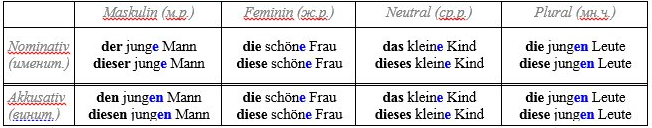
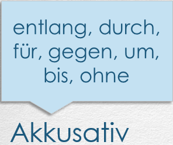
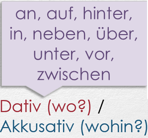

Akkusativ — Указательный падеж в немецком языке
- Изучая немецкий язык каждый видит в таблицах четыре падежа (der Kasus) der Nominativ, der Genitiv, der
Dativ, der Akkusativ.
- Сравним два русских предложения:
- Машина свернула за угол
Я заметил эту машину.
- В первом случае действующим лицом является машина. Слово машина стоит в именительном падеже (кто? что?), так как здесь называется, именуется деятель. Во втором случае машина из деятеля превращается в объект (здесь – наблюдения). Это так называемый винительный падеж (виню, обвиняю кого? что?).
- Машина превращается в машину, то есть меняет окончание.
Посмотрим теперь, что в подобной ситуации происходит в немецком:
Der Zug geht um halb zwölf. – Поезд отправляется в половине двенадцатого.
Ich nehme den Zug. – Дословно: возьму этот поезд.
- До сих пор мы имели дело с мужским родом, где артикль der изменился на den. Понаблюдаем теперь, что происходит в остальных родах и во множественном числе:
Средний род (n): Ich nehme das Taxi. – Я возьму (это) такси.
Женский род (f): Ich nehme die Straßenbahn. – Я возьму (этот) трамвай.
Множественное число (pl): Ich nehme die Briefmarken. – Я возьму (эти) марки.
Как видите, ничего не происходит. Akkusativ никак не изменяет существительные среднего и женского рода, не влияет он и на множественное число.
Поэтому нужно запомнить: Akkusativ – это только для мужского рода, только der на den!)
- А если артикль неопределенный?
- Ich trinke eine Milch, ein Bier und einen Wein. – Я выпью молоко, пиво и вино.
(Пойду на такой риск ради грамматики.) Где здесь слово мужского рода? Правильно, der (ein) Wein. В Akkusativ ein перешел в einen, добавив -en.
Значит, der —> den, ein —> einen (kein —> keinen, mein —> meinen). Всё на -en.


